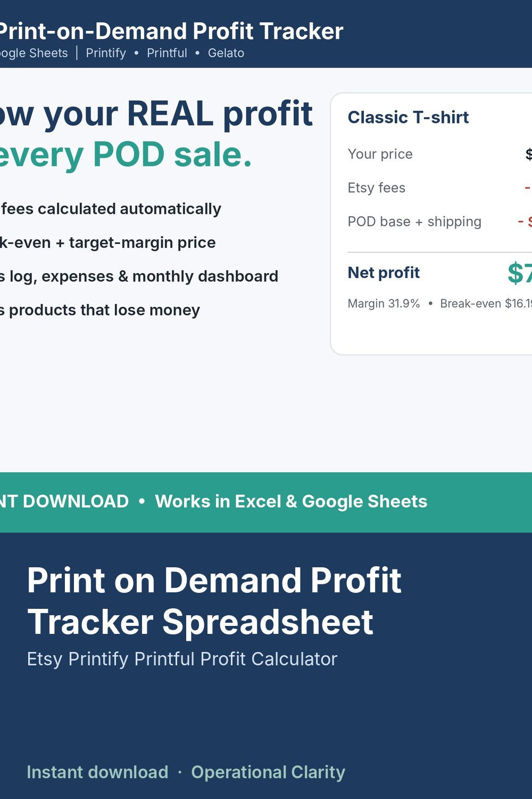

Print on Demand Profit Tracker Spreadsheet

ETSY PRINT-ON-DEMAND PROFIT TRACKER | Excel + Google Sheets | Instant Download
Stop guessing. See exactly what you keep from every Printify, Printful or Gelato sale after Etsy fees, POD base cost and shipping.
WHAT IT DOES
• Products & Pricing: enter base cost, POD shipping and your price. Etsy fees, net profit, margin, break-even price and the price you need for your target margin calculate automatically.
• Low-margin and money-losing products are flagged in color.
• Sales Log: pick the product from a dropdown, enter quantity, price and discount. POD cost, Etsy fees (including Offsite Ads orders) and net profit fill in per order.
• Expenses: ads, samples, mockups, subscriptions.
• Dashboard: revenue, fees, POD costs, expenses, net profit and margin for every month, with a monthly profit goal tracker and chart.
• Settings: all fee rates are editable, so it stays accurate for your country and if fees change.
WHAT YOU GET
• 1 Excel workbook (.xlsx) with 6 tabs: START HERE, DASHBOARD, SETTINGS, PRODUCTS, SALES LOG, EXPENSES
• Room for 100 products, 1,000 orders and 500 expenses
• Example data included so you can see how it works (just overwrite it)
COMPATIBILITY
Works in Microsoft Excel. For Google Sheets, upload the file to Google Drive and open it with Google Sheets.
GOOD TO KNOW
• Fee rates in SETTINGS are starting examples. Check the current rates shown in your own Etsy account and edit them if needed.
• Works for any POD provider. Not affiliated with Etsy, Printify, Printful or Gelato.
• This is a digital download. No physical item will be shipped.
• Personal / single-business use. No reselling or sharing of the file.